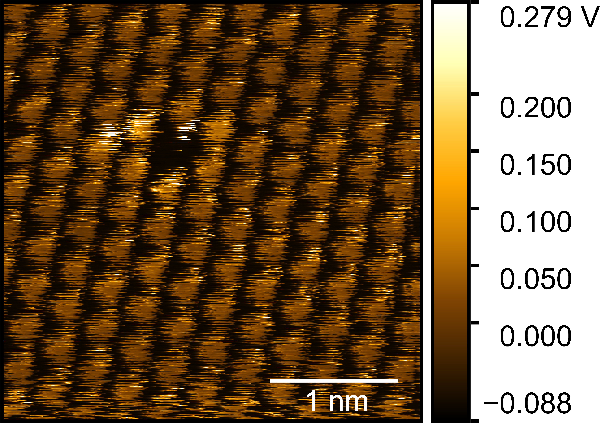
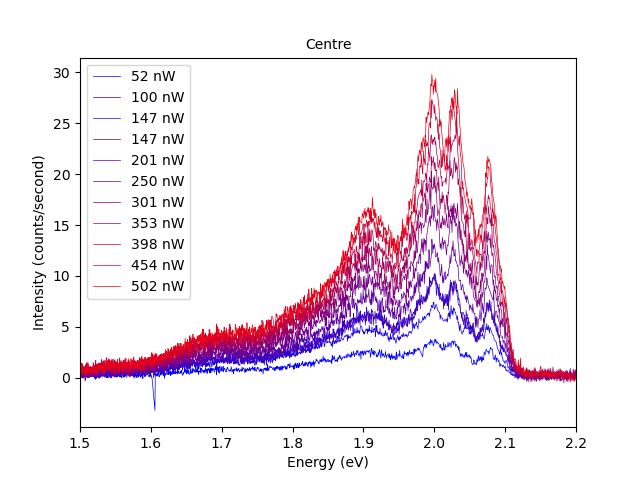
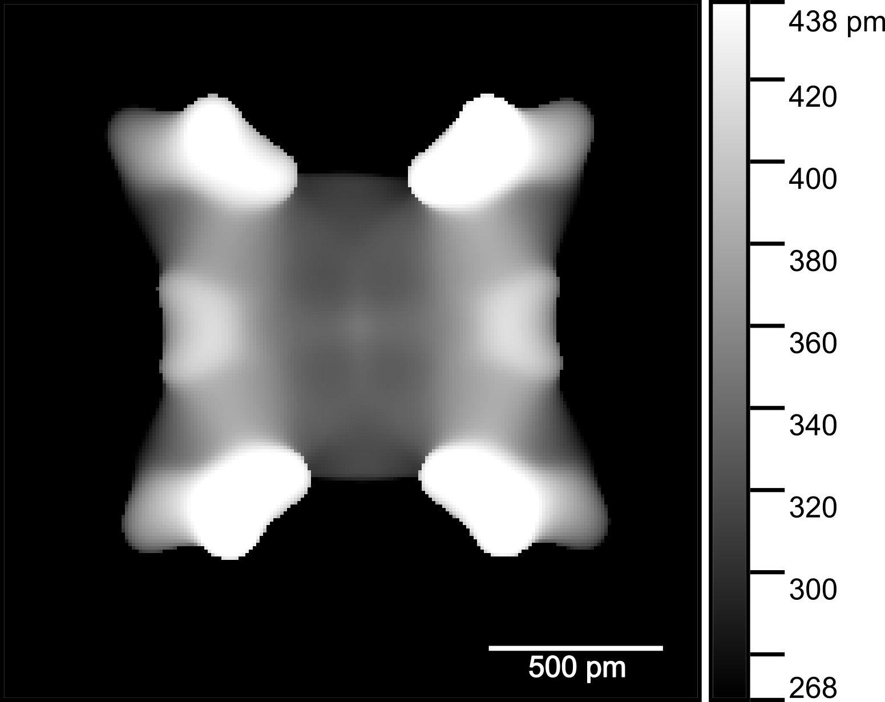

In Physics, crystals are considered as a repeating pattern of atoms. This periodicity leads to many symmetries which have a key role in the properties of a material. However, in reality, the pattern is rarely perfect and these deviations, called defects, lead to strong localized changes in a material's properties.
I am interested in observing atomic defects in 2D materials in high resolution and relating these defects to variations on a scale that could be measured optically. In my work, I use cAFM and low temperature photoluminescence spectra in the Isolab facility; built to isolate experiments from mechanical vibrations, electromagnetic radiation and electrical noise.

cAFM
The characterization of defects with Scanning Tunnelling Microscopy (STM) has granted researchers insights into their electrical properties on the atomic scale. cAFM (conductive Atomic Force Microscopy) complements STM by providing atomic resolution images where STM is inappropriate (ambient conditions, in-gap measurements).
If the nature of a defect could be ascertained from cAFM images, the density of a chosen defect could be surveyed trivially simplifying such measurements. As a result, I am working to characterize defects in Transition Metal Dichalcogenides via cAFM, so that I can correlate their density with changes in photoluminescence.
Photoluminescence
When a semiconductor is illuminated by photons with sufficent energy, electrons are excited across the band gap and then spontaneously relax, releasing a photon. Before falling back to the conduction band, the electron loses energy until it lies directly above the bandgap, meaning that the energy of the emitted photon will reflect the size of the band gap.
The band gap of a semiconductor can vary due to defects, meaning that if the density of defects can be correlated with changes in photoluminescence that they produce, the distribution of defects can be studied on a more accessible length scale.
Our Photoluminescence measurements are carried out at cryogenic temperatures as low as 10K. Measuring at low temperatures increases the resolution in energy and allows the peaks contributing to a Photoluminescence signal to be differentiated.

">
Simulation of Constant Force AFM
The assembly of planar molecules on surfaces has been revealed in great detail by Non-Contact AFM (NC-AFM). As the tip is oscillated at a constant height, the signal is exceptionally clear for atoms a particular distance below, meaning that non-planar molecules are not very clear when imaged by this technique.
The realization of a constant force technique in the vacuum environment would shed light onto non-planar molecules as a good signal could be maintained for atoms at multiple heights. By simulating idealized constant force images we show the value in developing such a technique and offer a method of interpreting any features that are observed.